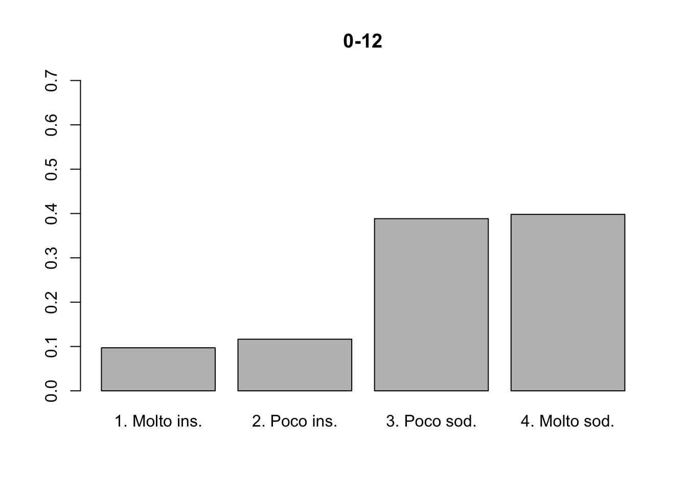
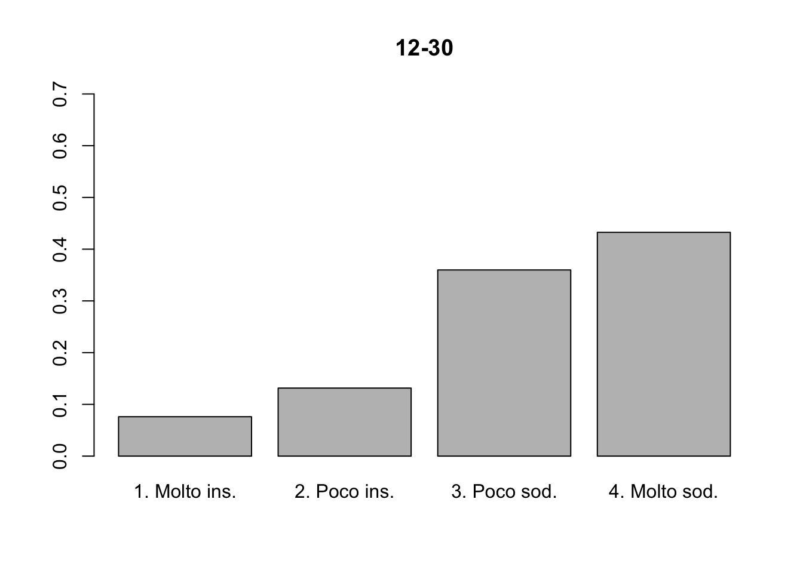
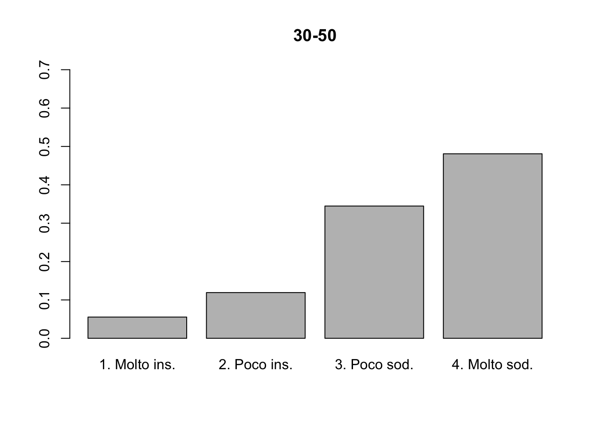
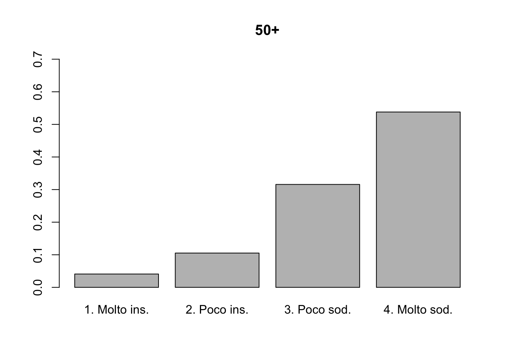
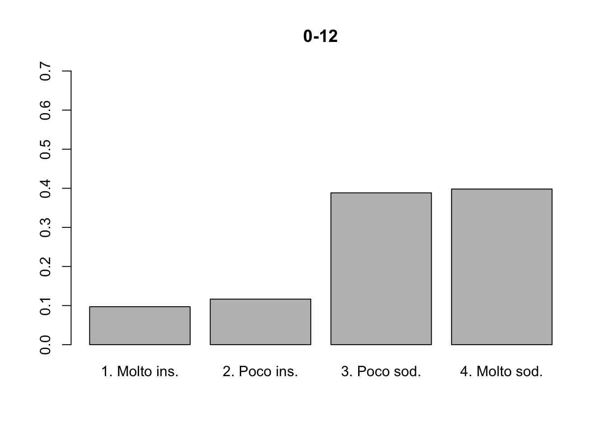
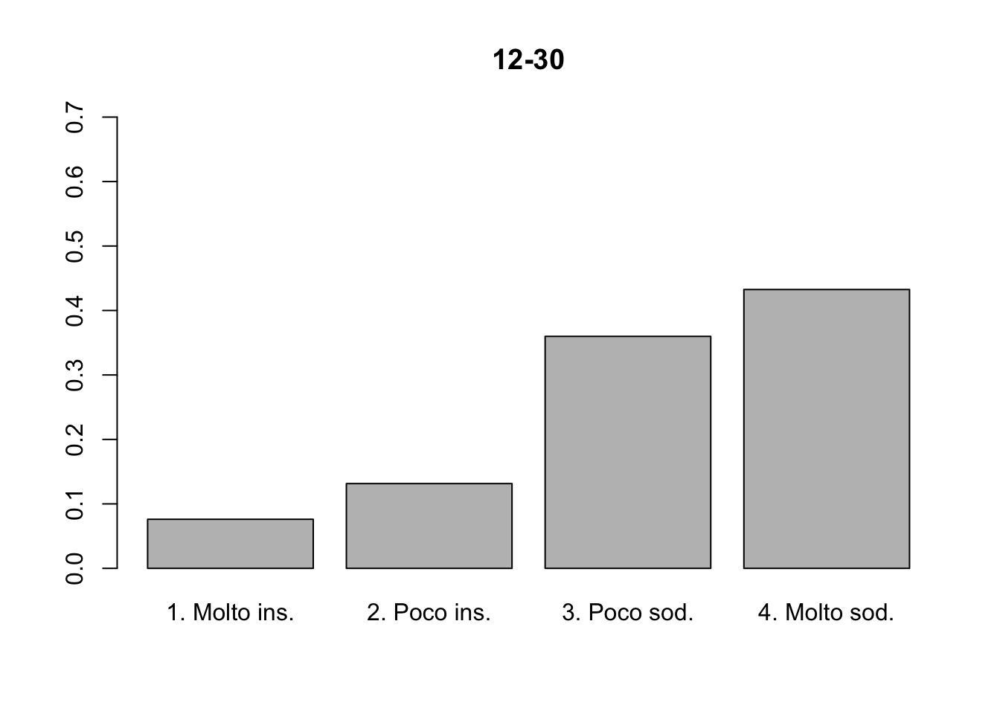
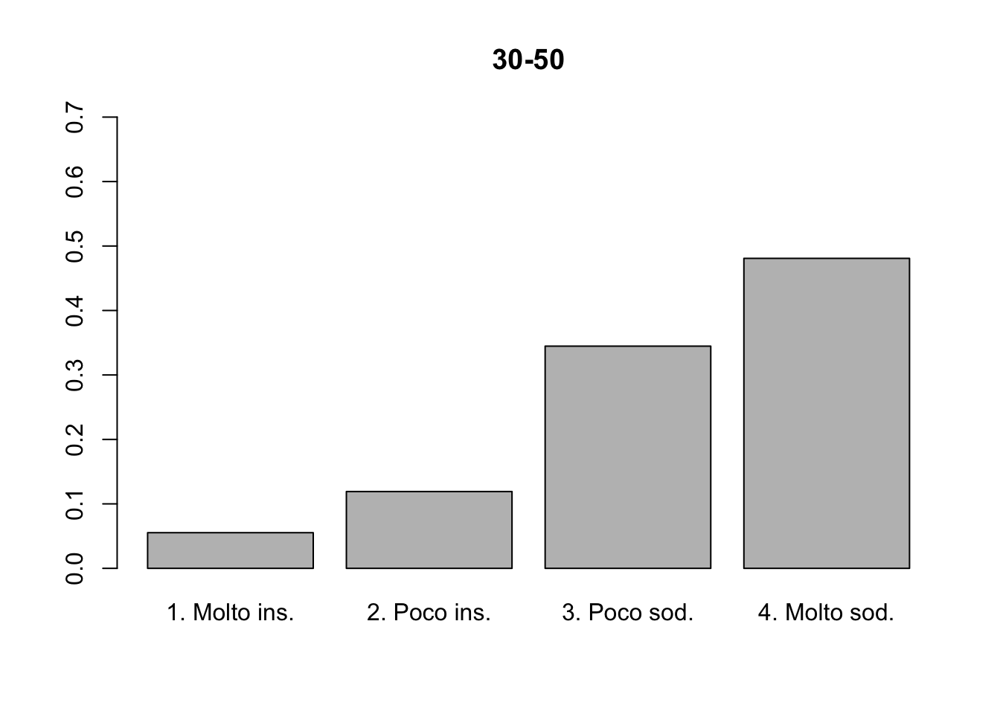
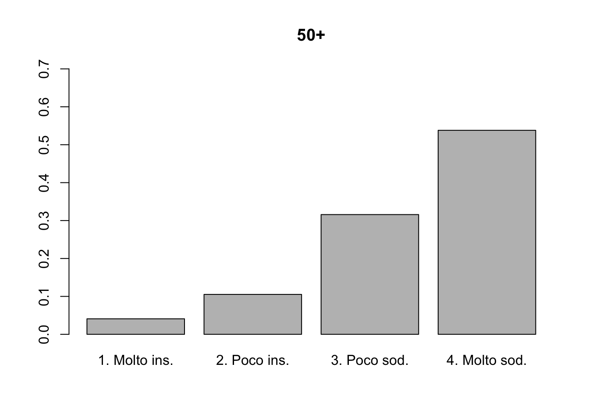

Esercizi 7: tabelle di contingenza
Le seguenti soluzioni sono state gentilmente fornite dal tutor di Statistica I dell’A.A. 2021/2022, Alex Alborghetti, che ringrazio. Le soluzioni sono state quindi riviste dal docente, che si assume le responsabilità di eventuali sviste ed errori.
Per misurare la dipendenza in distribuzione di \(x\) da \(y\) utilizziamo l’indice \(\chi^2\) normalizzato, che si basa sulla distanza tra frequenze attese e frequenze osservate, così definito:
\[ \chi^2_\text{norm} = \frac{1}{n\:\min\{{h-1, k-1}\}} \sum_{i=1}^h\sum_{j=1}^k \frac{(n_{ij} - \hat{n}_{ij})^2}{\hat{n}_{ij}}. \]
Posto \(h = k = 3\), calcoliamo le frequenze attese \(\hat{n}_{ij} = (n_{i+}n_{+j})/n\). Partendo dalla seguente:
| 0-1 | 2-5 | 5+ | ||
|---|---|---|---|---|
| Maturità classica | 10 | 67 | 31 | 108 |
| Maturità scientifica | 4 | 52 | 36 | 92 |
| Altre | 14 | 65 | 40 | 119 |
| 28 | 184 | 107 | \(n =\) 319 |
Applicando la formula:
| 0-1 | 2-5 | 5+ | ||
|---|---|---|---|---|
| Maturità classica | 9.48 | 62.3 | 36.23 | 108 |
| Maturità scientifica | 8.08 | 53.07 | 30.86 | 92 |
| Altre | 10.45 | 68.64 | 39.92 | 119 |
| 28 | 184 | 107 | \(n =\) 319 |
Allora:
\[ \chi^2_\text{norm} \approx 0.01. \]
Possiamo quindi concludere che, praticamente, esiste indipendenza in distribuzione tra le due variabili, ovvero, sulla base dei dati disponibili, il titolo di studio ottenuto alle superiori non sembra essere connesso con il numero di esami dati al primo anno di università, o comunque in modo molto lieve.
Riportiamo la tabella calcolando le frequenze marginali:
| Molto ins. | Poco ins. | Poco sodd. | Molto sodd. | ||
|---|---|---|---|---|---|
| 0-12 | 20 | 24 | 80 | 82 | 206 |
| 12-30 | 22 | 38 | 104 | 125 | 289 |
| 30-50 | 13 | 28 | 81 | 113 | 235 |
| 50+ | 7 | 18 | 54 | 92 | 171 |
| 62 | 108 | 319 | 412 | \(n =\) 901 |
Come in precedenza, analizziamo la dipendenza in distribuzione tramite l’indice \(\chi^2\), costruiamo pertanto la tabella delle frequenze attese:
| Molto ins. | Poco ins. | Poco sodd. | Molto sodd. | ||
|---|---|---|---|---|---|
| 0-12 | 14.2 | 24.7 | 72.9 | 94.2 | 206 |
| 12-30 | 19.9 | 34.6 | 102.3 | 132.2 | 289 |
| 30-50 | 16.2 | 28.2 | 83.2 | 107.5 | 235 |
| 50+ | 11.8 | 20.5 | 60.5 | 78.2 | 171 |
| 62 | 108 | 319 | 412 | \(n =\) 901 |
Possiamo quindi concludere che, praticamente, esiste indipendenza in distribuzione tra le due variabili. Qui sotto ne viene fornita la rappresentazione grafica.




Riportiamo la tabella calcolando le frequenze marginali:
| Denti normali | Malocclusione | ||
|---|---|---|---|
| Allattamento naturale | 4 | 16 | 20 |
| Allattamento artificiale | 1 | 21 | 22 |
| 5 | 37 | \(n=\) 42 |
Calcoliamo la tabella delle frequenze attese:
| Denti normali | Malocclusione | ||
|---|---|---|---|
| Allattamento naturale | 2.4 | 17.6 | 20 |
| Allattamento artificiale | 2.6 | 19.4 | 22 |
| 5 | 37 | \(n=\) 42 |
Allora:
\[ \chi^2_\text{norm} \approx 0.06. \]
Esiste quindi una lieve connessione tra il tipo di allattamento e i difetti nella dentatura del neonato. Non si può, però, affermare con certezza che passando da un tipo di allattamento ad un altro siano più frequenti difetti nella dentatura neonatale, dal momento che aver trovato una connessione non significa necessariamente aver trovato un rapporto di causalità.